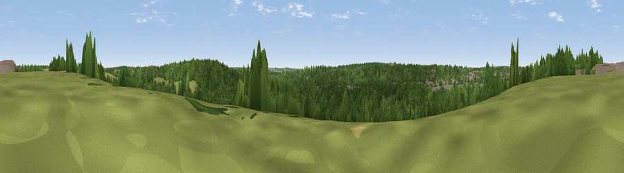

Viewpoint near Great Amwell
#43928 in England · top 50% of its area beats it · near Great Amwell · footpathWhere it is
The exact computed spot (TL 37225 13825). Click the marker for map links.
Public access: a public right of way passes within 29 m of this spot. Computed from Natural England's CRoW access layer and OpenStreetMap rights of way — not the legal definitive map. Always verify locally.
The view, rendered

A 360° render of this exact spot computed from the terrain model, tree cover and land cover — summer colours, afternoon light, calibrated against photographs of famous viewpoints. Real trees, hedges and buildings will differ in detail.
The panorama
Grey silhouette: terrain skyline in each direction (720 bearings, Earth curvature and refraction included). Dashed green: skyline with trees (+15 m) and buildings (+8 m) as obstacles. Blue strip: how far the ground is visible on each bearing.
Where the view opens
Wedge length = distance to the farthest visible ground on that bearing (vegetation-aware). Rings at 10, 25 and 50 km.
What fills the view
56% woodland · 20% grassland · 9% built-up · 9% cropland · 7% water
Angular shares of the visible panorama (visual magnitude), not map area. Landscape diversity 0.55 (0–1 Shannon).
Key numbers
More beautiful places nearby
The staircase of upgrades: each row has a higher view potential than everything closer. Driving times are estimates from straight-line distance, calibrated against real road routing — check an actual route before setting out.
| Place | Direction | Drive | Score |
|---|---|---|---|
| Viewpoint near Great Amwell | ESE · 1 km | ~3 min | 20.0 |
| Viewpoint near Thundridge | NW · 3 km | ~8 min | 27.7 |
| Viewpoint near Lower Nazeing | S · 10 km | ~19 min | 28.5 |
| Viewpoint near Sewardstonebury | S · 16 km | ~29 min | 32.4 |
| Viewpoint near Sewardstonebury | S · 19 km | ~32 min | 32.7 |
| Viewpoint near Baldock | NNW · 22 km | ~37 min | 53.7 |
| Viewpoint near Royston | N · 27 km | ~43 min | 56.6 |
| Viewpoint near Hexton | NW · 29 km | ~46 min | 65.4 |
51.80623, -0.01106 · source: screening · position refined by local search. Computed location — check access rights before visiting.